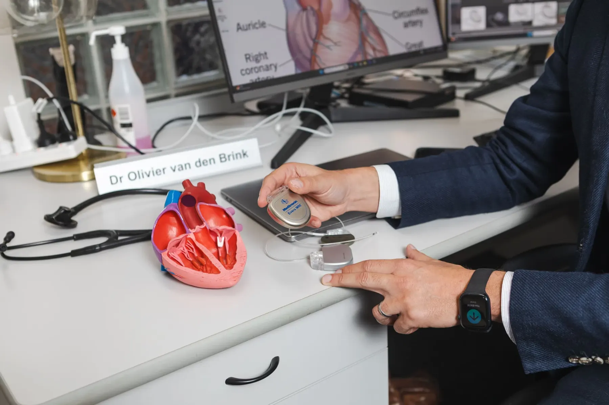

Heart failure
Long-term management of heart failure, including device therapy and remote pressure monitoring.

- Procedures & tests
- 04
- Specialists
- Clinics
- 07
- Bookings
- 03 9070 6116
Procedures & tests
Select a procedure to read what it involves, how to prepare and what to expect.
01Heart Failure Consultation
Ask our team about this service. Call 03 9070 6116 or request an appointment online.
02Biventricular DefibrillatorAn implantable cardioverter-defibrillator (ICD) is placed in your chest to reduce your risk of dying if the lower chambers of your heart (ventricles) go into a dangerous rhythm and stop beating effectively…
An implantable cardioverter-defibrillator (ICD) is placed in your chest to reduce your risk of dying if the lower chambers of your heart (ventricles) go into a dangerous rhythm and stop beating effectively (cardiac arrest).
You might need an ICD if you have a dangerously fast heartbeat (ventricular tachycardia) or a chaotic heartbeat that keeps your heart from supplying enough blood to the rest of your body (ventricular fibrillation).
ICDs detect and stop abnormal heartbeats (arrhythmias). The device continuously monitors your heartbeat and delivers electrical pulses to restore a normal heart rhythm when necessary.
An ICD differs from a pacemaker — another implantable device used to help control abnormal heart rhythms.
Why is it done?
You’ve likely seen TV shows in which hospital workers “shock” an unconscious person out of cardiac arrest with electrified paddles. An ICD does the same thing only internally and automatically when it detects an abnormal heart rhythm.
An ICD is surgically placed under your skin, usually below your left collarbone. One or more flexible, insulated wires (leads) run from the ICD through your veins to your heart.
Because the ICD constantly monitors for abnormal heart rhythms and instantly tries to correct them, it helps treat cardiac arrest, even when you are far from the nearest hospital.
How an ICD works
When you have a rapid heartbeat, the wires from your heart to the device transmit signals to the ICD, which sends electrical pulses to regulate your heartbeat. Depending on the problem with your heartbeat, your ICD could be programmed for the following therapies:
- Low-energy pacing therapy. You may feel nothing or a painless fluttering in your chest when your ICD responds to mild disruptions in your heartbeat.
- Defibrillation therapy. This is the strongest form of electrical therapy used to restore a normal heartbeat. During this therapy, it may feel as if you’re being kicked in the chest, and it might knock you off your feet.
- The pain from this therapy usually lasts only a second. There should be no discomfort after the shock ends.
An ICD can also be programmed to perform other functions, which include:
- Antitachycardia. If you have an unusually fast heart rate, the ICD delivers painless, low-energy impulses that pace or stimulate the heart to beat normally. This can prevent the need for cardioversion or defibrillation.
- Pacemaker. Most modern ICDs can also function as a pacemaker, delivering low-energy impulses that stimulate the heart to beat normally.
- Recording heart activity. The ICD records information about variations in your heart’s electrical activity and rhythm. This information helps your doctor evaluate your heart rhythm problem and, if necessary, reprogram your ICD.
Subcutaneous ICD
Subcutaneous Implantable Cardioverter-Defibrillator (S-ICD)
A subcutaneous ICD (S-ICD), a newer type of ICD, is available at Total Cardiovascular Care. An S-ICD is implanted under the skin at the side of the chest below the armpit. It’s attached to an electrode that runs along your breastbone. You may be a candidate for this device if you have structural defects in your heart that prevent attaching wires to the heart your blood vessels, or if you have other reasons for wanting to avoid traditional ICDs.
Implanting a subcutaneous ICD is less invasive than an ICD that attaches to the heart, but the device is larger in size than an ICD.
Who needs an ICD?
You’re a candidate for an ICD if you’ve had sustained ventricular tachycardia, survived a cardiac arrest, or fainted from a ventricular arrhythmia. You might also benefit from an ICD if you have:
- A history of coronary artery disease and heart attack that has weakened your heart.
- A heart condition that involves abnormal heart muscle, such as enlarged (dilated cardiomyopathy) or thickened (hypertrophic cardiomyopathy) heart muscle.
- An inherited heart defect that makes your heart beat abnormally. These include long QT syndrome, which can cause ventricular fibrillation and death even in young people with no signs or symptoms of heart problems.
- Having other rare conditions such as Brugada syndrome and arrhythmogenic right ventricular dysplasia also may mean you need an ICD.
Risks
Risks associated with ICD implantation are uncommon but may include:
- Infection at the implant site
- Allergic reaction to the medications used during the procedure
- Swelling, bleeding or bruising where your ICD was implanted
- Damage to the vein where your ICD leads are placed
- Bleeding around your heart, which can be life-threatening
- Blood leaking through the heart valve where the ICD lead is placed
- Collapsed lung (pneumothorax)
How to Prepare
To determine whether you need an ICD, your doctor might perform a variety of diagnostic tests, which may include:
- Electrocardiography (ECG). In this non-invasive test, sensor pads with wires attached (electrodes) are placed on your chest and sometimes limbs to measure your heart’s electrical impulses. Your heart’s beating pattern can offer clues to the type of irregular heartbeat you have.
- Echocardiography. This non-invasive test uses harmless sound waves that allow your doctor to see your heart without making an incision. During the procedure, a small, plastic instrument called a transducer is placed on your chest. It collects reflected sound waves (echoes) from your heart and transmits them to a machine that uses the sound wave patterns to compose images of your beating heart on a monitor. These images show how well your heart is functioning, and recorded images allow your doctor to measure the size and thickness of your heart muscle.
- Holter Monitoring. Also known as an ambulatory electrocardiogram monitor, a Holter monitor records your heart rhythm for 24 hours. Wires from electrodes on your chest go to a battery-operated recording device carried in your pocket or worn on a belt or shoulder strap. While wearing the monitor, you’ll keep a diary of your activities and symptoms. Your doctor will compare the diary with the electrical recordings and try to figure out the cause of your symptoms.
- Electrophysiology study (EPS). Electrodes are guided through blood vessels to your heart and used to test the function of your heart’s electrical system. This can identify whether you have or might develop heart rhythm problems.
It’s likely you’ll be asked not to eat or drink for at least six hours before your surgery. Talk to your doctor about the medications you take and whether you should continue to take them before your procedure to implant an ICD.
What Can You Expect?
During the Procedure
Implantable Cardioverter Defibrillator
Usually, the procedure to implant an ICD can be performed with numbing medication and a sedative that relaxes you but allows you to remain aware of your surroundings. In some cases, general anaesthesia, which puts you to sleep, may be used.
The procedure usually takes a few hours. During surgery, one or more flexible, insulated wires (leads) are inserted into veins near your collarbone and guided, with the help of X-ray images, to your heart. The ends of the leads are secured to your heart, while the other ends are attached to the generator, which is usually implanted under the skin beneath your collarbone.
Occasionally, once the ICD is in place, your doctor will test it and program it for your heart rhythm problem. Testing the ICD might require speeding up your heart and then shocking it back into normal rhythm. We usually reserve this test for patients with subcutaneous ICDs.
After the Procedure
You’ll stay in the hospital one or two days, and the ICD might be tested once more before you’re discharged. Additional testing of your ICD usually doesn’t require surgery.
Treating Pain After Your Procedure
After surgery, you may have some pain in the incision area, which can remain swollen and tender for a few days or weeks. Your doctor might prescribe pain medication. As your pain lessens, you can take pain relievers, such as paracetamol.
When you’re released from the hospital, you’ll need to arrange for a ride home because you won’t be able to drive for at least 2 weeks.
Results
ICDs have become standard treatment for anyone who has survived cardiac arrest, and they’re increasingly used in people at high risk of sudden cardiac arrest. An ICD lowers your risk of sudden death from cardiac arrest more than medication alone.
Although the electrical shocks can be unsettling, there is evidence that the ICD is effectively treating your heart rhythm problem and protecting you from sudden death. Talk to your doctor about how to best care for your ICD.
After the procedure, you’ll need to take some precautions to avoid injuries and make sure your ICD works properly.
Short-term precautions
You’ll likely be able to return to normal activities such as exercise, work and sex soon after you recover from surgery. Follow your doctor’s instructions. For four weeks after surgery, your doctor might ask you to refrain from:
- Vigorous above-the-shoulder activities or exercises, including golf, tennis, swimming, bicycling, bowling or vacuuming
- Lifting anything weighing more than 2.5kg
- Playing contact sports
- Strenuous exercise programs
Long-Term Precautions
Problems with your ICD due to electrical interference are rare. Still, take precautions with the following:
- Mobile phones and other mobile devices. It’s safe to talk on a mobile phone, but avoid placing your mobile phone within about 15 centimeters of your ICD implantation site when the phone is turned on. Although unlikely, your ICD could mistake a mobile phone’s signal for a heartbeat and slow your heartbeat, causing symptoms such as sudden fatigue.
- Security systems. After surgery, you’ll receive a card that says you have an ICD. Show your card to airport personnel because the ICD may set off airport security alarms.Also, hand-held metal detectors often contain a magnet that can interfere with your ICD. Limit scanning with a hand-held detector to less than 30 seconds over the site of your ICD or make a request for a manual search.
- Medical equipment. Let doctors, medical technicians and dentists you see know you have an ICD. Some procedures, such as magnetic resonance imaging (MRI), magnetic resonance angiography (MRA), and radiofrequency or microwave ablation are not recommended if you have an ICD.
- Power generators. Stand at least 0.6 meters from welding equipment, high-voltage transformers or motor-generator systems. If you work around such equipment, your doctor can arrange a test in your workplace to see if the equipment affects your ICD.
- MP3 player headphones. Although the player itself poses little risk, the headphones may be a problem. Most contain a magnetic substance and can interfere with your ICD. Keep your headphones at least 15 centimeters from your ICD.
- Magnets. These might affect your ICD, so it’s a good idea to keep magnets at least 15 centimeters from your ICD site.
Devices that pose little or no risk to your ICD include microwave ovens, televisions and remote controls, AM/FM radios, toasters, electric blankets, electric shavers and electric drills, computers, scanners, printers, and GPS devices.
Driving Restrictions
If you have an ICD to treat ventricular arrhythmia, driving a vehicle presents a challenge. The combination of arrhythmia and shocks from your ICD can cause fainting, which would be dangerous while you’re driving.
The Austroads Fitness to Drive guidelines advise avoiding driving for two weeks after ICD placement, but talk to your doctor for specific recommendations. The guidelines discourage driving during the first six months after your procedure if your ICD was implanted due to a previous cardiac arrest or ventricular arrhythmia.
If you have no shocks during this period, you’ll likely be able to drive again. But if you then have a shock, with or without fainting, tell your doctor and follow his or her recommendations. In most cases, you’ll need to stop driving until you’ve been shock-free for another six months.
If you have an ICD but have no history of life-threatening arrhythmias, you can usually resume driving within two weeks after your procedure if you’ve had no shocks. Discuss your situation with your doctor.
You usually can’t get a commercial driver’s license if you have an ICD.
Battery Life
The lithium battery in your ICD can last up to seven years. The battery will be checked during regular check-ups, which should occur every three to six months. When the battery is nearly out of power, your old shock generator is replaced with a new one during a minor outpatient procedure.
ICDs and End-of-Life Issues
If you have an ICD and become terminally ill, your ICD could deliver unnecessary shocks. It’s easy to turn off your ICD, and turning it off may prevent unnecessary suffering.
Talk to your doctor about your wishes. Also talk to family members or another person designated to make medical decisions for you about what you’d like to do in end-of-life care situations.
03PacemakerA pacemaker is a small device with two parts — a generator and wires (leads, or electrodes) — that’s placed under the skin in your chest to help control your heartbeat.
A pacemaker is a small device with two parts — a generator and wires (leads, or electrodes) — that’s placed under the skin in your chest to help control your heartbeat.
People may need a pacemaker for a variety of reasons — mostly due to one of a group of conditions called arrhythmias, in which the heart’s rhythm is abnormal.
Normal aging of the heart may disrupt your heart rate, making it beat too slowly. Heart muscle damage resulting from a heart attack is another common cause of disruptions of your heartbeat.
Some medications can affect your heart rate as well. For some, genetic conditions cause an abnormal heart rate. Regardless of the underlying cause of an abnormal heart rate, a pacemaker may fix it.
A pacemaker can often be implanted in your chest with a minor surgery. You may need to take some precautions in your daily life after your pacemaker is installed.
Types of Pacemaker
Cardiac Resynchronization Therapy
Pacemakers are implanted to help control your heartbeat. They can be implanted temporarily to treat a slow heartbeat after a heart attack, surgery or overdose of medication.
Pacemakers can also be implanted permanently to correct a slow heartbeat (bradycardia) or, in some cases, to help treat heart failure.
Smaller pacemakers about the size of a pill have been developed and are currently undergoing clinical trials. This new, leadless device can be implanted directly into the heart, where it emits an electrical impulse to control the heartbeat. Because a lead isn’t required, this device can minimize the risk of infection and speed recovery time.
How Your Heart Beats
To understand how a pacemaker works, it helps to know how your heart beats.
The heart is a muscular, fist-sized pump with four chambers, two on the left side and two on the right. The upper chambers are the right and left atria. The lower chambers are the right and left ventricles.
For your heart to function properly, the heart’s chambers must work in a coordinated fashion. Your heart must also beat at an appropriate rate — normally from 60 to 100 beats a minute in resting adults. If your heart beats too slowly or too rapidly, not enough blood flows through your body, leading to fatigue, fainting, shortness of breath, confusion, and other signs and symptoms.
Your heart’s electrical system controls the chambers’ pumping action. A normal heartbeat begins in your right atrium, in the sinus node. This cluster of cells — your natural pacemaker — acts like a spark plug, generating regular electrical impulses that travel through specialized muscle fibres.
When an electrical impulse reaches both the right and left atria, they contract and squeeze blood into the ventricles. After a split-second delay to allow the ventricles to fill, the impulse reaches the ventricles, making them contract and pump blood to the rest of your body.
What a Pacemaker Does
An implanted electronic pacemaker mimics the action of your natural pacemaker. An implanted pacemaker consists of two parts:
- The pulse generator. This small metal container houses a battery and the electrical circuitry that regulates the rate of electrical pulses sent to your heart.
- Leads (electrodes). One to three flexible, insulated wires are each placed in a chamber, or chambers, of your heart and deliver the electrical pulses to adjust your heart rate.
Pacemakers monitor your heartbeat and, if it’s too slow, the pacemaker will speed up your heart rate by sending electrical signals to your heart. In addition, most pacemakers have sensors that detect body motion or breathing rate, which signals the pacemaker to increase your heart rate during exercise to meet your body’s increased need for blood and oxygen.
Single Chamber Pacemaker
This type of pacemaker usually carries electrical impulses from the pulse generator to the right ventricle of your heart.
Dual Chamber Pacemaker
A dual chamber pacemaker carries electrical impulses from the pulse generator to both the right ventricle and the right atrium of your heart. The impulses help control the timing of contractions between the two chambers.
Biventricular Pacemaker
A biventricular pacemaker is a treatment option for people with heart failure whose hearts’ electrical systems have been damaged. Unlike a regular pacemaker, a biventricular pacemaker stimulates both of the lower chambers of the heart (the right and left ventricles) to make the heart beat more efficiently.
A biventricular pacemaker paces both ventricles so that all or most of the ventricular muscle pumps together. This allows your heart to pump blood more effectively. Because this treatment resets the ventricles’ pumping mechanism, it’s also referred to as cardiac resynchronization therapy (CRT).
Risks
Complications from having surgery to implant your pacemaker are uncommon, but could include:
- Infection where the pacemaker was implanted
- Allergic reaction to the dye or anaesthesia used during your procedure
- Swelling, bruising or bleeding at the generator site, especially if you are taking blood thinners
- Damage to your blood vessels or nerves near the pacemaker
- Collapsed lung
Life-threatening complications of pacemaker implantation are rare.
How to Prepare
Before your doctor decides if you need a pacemaker, you’ll have several tests done to find out the cause of your irregular heartbeat. These could include:
- Electrocardiogram. In this non-invasive test, sensor pads with wires attached, called electrodes, are placed on your chest and sometimes your limbs to measure your heart’s electrical impulses. Your heart’s beating pattern can offer clues to the type of irregular heartbeat you have.
- Holter monitoring. Also known as an ambulatory monitor, a Holter monitor records your heart rhythms for an entire 24-hour period. Wires from electrodes on your chest go to a battery-operated recording device. While you’re wearing the monitor, you’ll keep a diary of your activities and symptoms. Your doctor will compare the diary with the electrical recordings to try to figure out the cause of your symptoms.
- Echocardiogram. This non-invasive test uses harmless sound waves that allow your doctor to see your heart without making an incision. During the procedure, a small instrument called a transducer is placed on your chest. It collects reflected sound waves (echoes) from your heart and transmits them to a machine that uses the sound wave patterns to compose images of your beating heart on a monitor. These images show how well your heart is functioning, and recorded pictures allow your doctor to measure the size and thickness of your heart muscle.
- Stress test. Some heart problems occur only during exercise. For a stress test, an electrocardiogram is taken before and immediately after walking on a treadmill or riding a stationary bike. In some cases, an echocardiogram or nuclear imaging may be done.
What to Expect
Before the Procedure
Surgery to implant the pacemaker is usually performed while you’re awake and typically takes a few hours. Before the procedure, you are taken to a special room (called a preparation room or holding area) to start an intravenous (IV) line.
Most pacemaker implantations are done using local anaesthesia to numb the area of any incisions. You may receive additional IV medication to help you relax. The implantation is done in a room with special X-ray equipment. Your chest is cleaned with an antibacterial soap, and an IV line is placed in your arm on the same side as the pacemaker.
During the Procedure
During surgery, one or more flexible, insulated wires (leads, or electrodes) are inserted into a major vein under or near your collarbone and guided to your heart with the help of X-ray images. One end of each wire is secured to the appropriate position in your heart, while the other end is attached to the pulse generator, which is usually implanted under the skin beneath your collarbone.
After the Procedure
You’ll usually stay in the hospital for one day after having a pacemaker implanted. Before you leave, your pacemaker is programmed to fit your particular pacing needs. A return visit is often scheduled to make sure your pacemaker’s settings are correct.
After that, most pacemakers can be checked remotely using wireless technology. Using your mobile phone or radiofrequency signals, your pacemaker transmits and receives information between you and your doctor’s office, where your doctor can access the data — including your heart rate and rhythm, how your pacemaker is functioning, and remaining battery life.
Remote transmissions can be made at scheduled intervals or at unscheduled times if your pacemaker sends an alert, or you can send a transmission if you have a concern. Remote technology means fewer trips to the doctor’s office, but you’ll still need to be seen by your doctor in person for scheduled check-ups.
After your procedure to implant your pacemaker, your doctor may recommend that you avoid vigorous exercise, heavy lifting or lifting your arms above your shoulders for about six weeks. You may have some aches and pains near the area where your pacemaker was implanted. These pains can be relieved with over-the-counter medicines, such as paracetamol, but talk to your doctor before taking any pain relievers.
Special Precautions
It’s unlikely that your pacemaker would stop working properly because of electrical interference. Still, you’ll need to take a few precautions:
- Mobile phones. It’s safe to talk on a mobile phone, but avoid placing your mobile phone directly over your pacemaker implantation site when the phone is turned on. Although unlikely, your pacemaker could misinterpret the mobile phone signal as a heartbeat and withhold pacing, producing symptoms, such as sudden fatigue.
- Security systems. Passing through an airport metal detector won’t interfere with your pacemaker, although the metal in it may sound the alarm. But avoid lingering near or leaning against a metal-detection system. If security personnel insist on using a hand-held metal detector, ask them not to hold the device near your pacemaker any longer than necessary or ask for an alternative form of personal search. To avoid potential problems, carry an ID card stating that you have a pacemaker.
- Medical equipment. If a doctor is considering any medical procedure that involves intensive exposure to electromagnetic energy, tell him or her that you have a pacemaker. Such procedures include magnetic resonance imaging, therapeutic radiation for cancer treatment and shock wave lithotripsy, which uses shock waves to break up large kidney stones or gallstones. If you’re having surgery, a procedure to control bleeding (electrocautery) also can interfere with pacemaker function.
- Power-generating equipment. Stand at least 2 feet (60 centimeters) from welding equipment, high-voltage transformers or motor-generator systems. If you work around such equipment, your doctor can arrange a test in your workplace to determine whether it affects your pacemaker.
- Devices that are unlikely to interfere with your pacemaker include microwave ovens, televisions and remote controls, radios, toasters, electric blankets, electric shavers, and electric drills.
Results
Once your pacemaker is implanted, the battery should last five to 15 years, which is the average battery life. When a pacemaker’s battery wears out, the pacemaker’s pulse generator is replaced. The leads of your pacemaker can be left in place — though they may need to be replaced eventually — and the procedure to change your pacemaker’s battery is often quicker and requires less recovery time than the procedure to first implant your pacemaker.
Pacemakers are a standard treatment for many conditions affecting your heart’s electrical system. By preventing a slow heart rate, pacemakers can treat symptoms, such as fatigue, lightheadedness and fainting. Because most of today’s pacemakers automatically adjust your heart rate to match your level of physical activity, they can allow you to resume a more active lifestyle.
Pacemakers and End-of-Life Issues
If you have a pacemaker and become terminally ill with a condition unrelated to your heart, such as cancer, it’s possible that your pacemaker could prolong the process of dying. Doctors and researchers have varied opinions on turning off a pacemaker in end-of-life situations.
Talk to your doctor if you have a pacemaker and are concerned about turning it off. You may also want to talk to family members or another person designated to make medical decisions for you about what you’d like to do in end-of-life care situations.
04CardioMEMSPatients with heart failure are faced with many life-challenging problems. With progression of symptoms, many patients require hospitalization. To help reduce the chance of hospitalizations, cardiologists at…
Patients with heart failure are faced with many life-challenging problems. With progression of symptoms, many patients require hospitalization. To help reduce the chance of hospitalizations, cardiologists at Total Cardiovascular Care are using advanced monitoring technology, including the CardioMEMS™ Heart Failure Monitoring System to allow patients to gain control of their heart failure care. We are currently the first and only centre in Australia that commercially implants this device.
What is heart failure?
Heart failure is when the heart is still working, but it’s not pumping blood as well as it should, so the body isn’t getting the oxygen and nutrients it needs. When blood isn’t pumped out of the heart efficiently, fluid backs up into the lungs and other parts of the body, causing swelling and shortness of breath. It can be a dangerous situation for heart failure patients.
What are the symptoms of worsening heart failure?
In the early stages, patients may not have any symptoms. But as the heart function worsens, people can have shortness of breath (at rest or with activity), bloating, swelling, weight gain and/or fatigue. If left untreated, many patients require hospitalization to help them get their symptoms under control.
What is CardioMEMS and how does it help?
CardioMEMS is a TGA-approved heart failure monitoring device that has been proven to improve quality of life and reduce hospital admissions due to worsening heart failure. It lets us keep track of a patient’s heart function, so we can spot early signs that someone with heart failure is getting sicker and treat them without admitting them to the hospital.
How does CardioMEMS work?
CardioMEMS is a small device, about the size of a paper clip, that is implanted via a catheter (a thin, flexible tube) and permanently resides in a blood vessel. CardioMEMS measures the pressure pushing back on the lungs from the heart to alert you and your doctor earlier that your heart failure may be getting worse.
Nearly automatically, the device transmits information on your fluid retention and heart pressure to us at TCC without the need for the patient to leave their home. Using a specialized pillow, the patient lies down on it for a few minutes each morning, after which the information is transmitted to us electronically. The pillow collects information from the implanted CardioMEMS device and sends it to us. We have a dedicated Heart Failure nurse (Kerry) who can then directly call you to adjust your medicines and other treatments, even before you become aware of a change in symptoms or weight.
How is the device inserted?
The device is placed using a minimally invasive procedure using a catheter. We make a small nick in the groin and guide the catheter, which carries the CardioMEMS device, through the blood vessels and up to the pulmonary artery. Most people don’t need sedation, and there’s no big incision and no blood loss. People often go home the same day.
How does CardioMEMS improve quality of life?
Heart failure symptoms like swelling or bloating, shortness of breath and fatigue can make a person less inclined to be active, to socialize or to just go about a normal, everyday life. The CardioMEMS device alerts us to very early signs of worsening disease, so we can make adjustments that help the patient feel well enough to enjoy an improved quality of life.
Specialists in heart failure
All doctors →Other areas of care
All services →Take control of your heart health today

Book online
Request an appointment in a few minutes. Our team will be in touch to confirm a time and clinic.
Call us
03 9070 6116Best for urgent appointments. Main rooms open Mon–Fri, 9am–5pm.
Visit us
07 clinicsFrom Highett to Inverloch, with main rooms at 11 Hastings Road, Frankston.
See all locations →